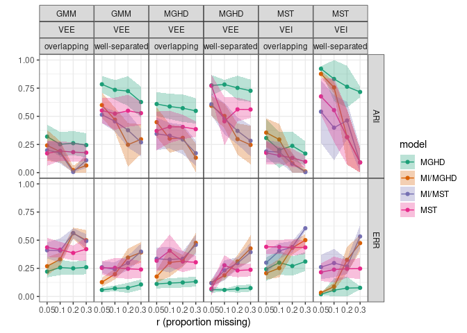

## graphics
library(ggplot2)
theme_set(theme_bw()+theme(panel.spacing=grid::unit(0,"lines")))
library(directlabels)
## modeling/coef plots
library(lme4)
library(broom)
library(dotwhisker)
library(ggstance) ## horizontal geoms
library(stargazer)
## manipulation
library(tidyr)
library(dplyr)
library(purrr)
library(readr)tables are best suited for looking up specific information, and graphs are better for perceiving trends and making comparisons and predictions

## need read_table2() for 'irregular' data
dd <- read_table2("data/wei_tab5.5.txt")
## Warning: `read_table2()` was deprecated in readr 2.0.0.
## Please use `read_table()` instead.
head(dd)
## # A tibble: 6 × 11
## dataset r type MGHD.ERR MGHD.ARI MST.ERR MST.ARI `MI/MGHD.ERR`
## <chr> <dbl> <chr> <dbl> <dbl> <dbl> <dbl> <dbl>
## 1 sim1 0.05 est 0.0608 0.774 0.0688 0.771 0.121
## 2 sim1 0.05 sd 0.0292 0.0925 0.0557 0.0998 0.0302
## 3 sim1 0.1 est 0.0578 0.782 0.277 0.456 0.188
## 4 sim1 0.1 sd 0.0116 0.0412 0.0895 0.215 0.0392
## 5 sim1 0.2 est 0.0674 0.752 0.231 0.562 0.311
## 6 sim1 0.2 sd 0.0335 0.108 0.0604 0.105 0.0552
## # … with 3 more variables: MI/MGHD.ARI <dbl>, MI/MST.ERR <dbl>,
## # MI/MST.ARI <dbl>dd2 <- (dd
%>% gather(key=model,value=val,-c(dataset,r,type))
%>% separate(model,into=c("model","stat"),sep="\\.")
%>% spread(key=type,value=val) ## est + sd in a single row
)
head(dd2)
## # A tibble: 6 × 6
## dataset r model stat est sd
## <chr> <dbl> <chr> <chr> <dbl> <dbl>
## 1 sim1 0.05 MGHD ARI 0.774 0.0925
## 2 sim1 0.05 MGHD ERR 0.0608 0.0292
## 3 sim1 0.05 MI/MGHD ARI 0.594 0.0874
## 4 sim1 0.05 MI/MGHD ERR 0.121 0.0302
## 5 sim1 0.05 MI/MST ARI 0.607 0.098
## 6 sim1 0.05 MI/MST ERR 0.118 0.0341
simtab <- read.table(header=TRUE,text="
dataset distribution covstruc separation
sim1 MGHD VEE well-separated
sim2 MGHD VEE overlapping
sim3 MST VEI well-separated
sim4 MST VEI overlapping
sim5 GMM VEE well-separated
sim6 GMM VEE overlapping
")
dd3 <- dd2 %>% merge(simtab,by="dataset")gg1 <- (ggplot(dd3,aes(factor(r),est,colour=model))
+ geom_point()+geom_line(aes(group=model)) ## points and lines
## transparent ribbons, +/- 1 SD:
+ geom_ribbon(aes(ymin=est-sd,ymax=est+sd,group=model,fill=model),
colour=NA,alpha=0.3)
## limit y-axis, compress out-of-bounds values
+ scale_y_continuous(limits=c(0,1),oob=scales::squish)
+ facet_grid(stat~distribution+covstruc+separation)
+ labs(x="r (proportion missing)",y="")
+ scale_colour_brewer(palette="Dark2")
+ scale_fill_brewer(palette="Dark2"))
geom_rect)Gelman, Andrew. 2011. “Why Tables Are Really Much Better Than Graphs.” Journal of Computational and Graphical Statistics 20 (1): 3–7. https://doi.org/10.1198/jcgs.2011.09166.
Gelman, Andrew, Cristian Pasarica, and Rahul Dodhia. 2002. “Let’s Practice What We Preach: Turning Tables into Graphs.” The American Statistician 56 (2): 121–30. http://www.tandfonline.com/doi/abs/10.1198/000313002317572790.
Wei, Yuhong. 2017. “Extending Growth Mixture Models and Handling Missing Values via Mixtures of Non-Elliptical Distributions.” Thesis. https://macsphere.mcmaster.ca/handle/11375/21987.